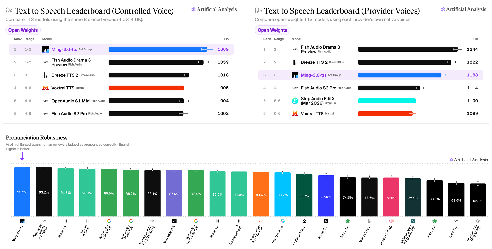

Threads｜Ming-3.0-tts：開放權重的多語音 TTS，先分清「評測亮點」與「可直接商用」

一句話摘要
Ming-3.0-tts 值得關注的地方是：它把聲音複製、以文字設計聲線、情緒／語速／音高控制與副語言效果放在同一個開放權重工具鏈；不過「5 個模型」是整個 Ming-3.0 聲音系列，不是 5 個 TTS 模型，而評測名次與 MIT 標示也不會自動解決硬體、聲音權利與實際交付品質問題。
Threads 貼文重點：哪些成立、哪些要補充
Song（@sapplex）分享「螞蟻」釋出的 Ming-3.0 語音系列，稱有 5 個模型、MIT、可免費商用；並提到「導演模式」可以用文字指示聲音風格、情緒與重讀，及其在 Artificial Analysis TTS 榜的表現。
官方 Hugging Face 帳號 `inclusionAI` 確實可找到 5 個 Ming-3.0 checkpoint：
- `Ming-3.0-tts-0.5B`：0.5B dense 語音生成模型；
- `Ming-3.0-tts-tiny`：7.9B total／1.3B active 的 MoE 語音生成模型；
- `Ming-3.0-audio-flash`、`Ming-3.0-audio-tiny`：audio 系列；
- `Ming-3.0-asr-tiny`：ASR 語音辨識模型。
因此，**「5 個模型」是整個系列的數量；專門做 TTS 的是其中兩個。** 這個區別很重要：做短影音旁白或 podcast，應直接比較兩個 TTS checkpoint 的需求與成果，而不是把 audio／ASR checkpoint 當成可替代的配音模型。
所謂「導演模式」實際可做什麼
官方專案將核心能力拆為不同 task mode，而非所有控制可以任意混用：
- **Zero-shot voice cloning**：以短參考音檔與對應文字複製聲線。
- **Voice design**：用自然語言描述想要的聲音，不必提供參考聲音。
- **Free-form control**：以自然語言指定說話方式，例如溫暖、親密、敘事感與節奏。
- **屬性與情緒**：控制速度、音高、音量與數種情緒。
- **副語言效果**：中英文可插入 14 種內嵌標籤，如呼吸、咳嗽、嘆氣、笑聲、遲疑與驚訝。
- **語言／方言與多人**：支援中文、英文、德文、西班牙文、法文、韓文、日文，以及四川話、粵語；tiny 額外提供多說話者 podcast task。
這比單純「文字轉聲音」更接近配音工作流，但每種 task 都有自己的輸入限制。例如 free-form 預設不建議混用參考音檔，voice design、情緒、方言和內建聲線也不是可任意疊加的旋鈕；實作時要照官方 cookbook 為對應 task 建 prompt。
Artificial Analysis 的名次該怎麼讀
Ming-3.0-tts 官方 README 引述 2026 年 10 月的 Artificial Analysis 資料，寫明：
- **Controlled Voice**：開放權重模型第 1；
- **Pronunciation Robustness**：總排名第 1，93.2%；
- **Provider Voice**：開放權重模型第 3。
這支持它在特定評測上有很強表現，但不支持「所有情況都超越 ElevenLabs v4」的廣義結論。原因是各榜的衡量不同：Controlled Voice 與 Provider Voice 是偏好／Elo 設定，Pronunciation Robustness 則衡量標記片段是否被人類評為正確發音；語言、樣本、聲線、文本正規化、延遲與實際商業後製需求都會改變結果，而且榜單會隨新模型更新。
最可靠的採用方式，是拿自己常用的繁中腳本、品牌詞、數字、英文縮寫與情緒指令做盲聽測試，並分開記錄：發音、自然度、角色一致性、可控性、生成速度與後製成本。
安裝與硬體：免費權重不等於低門檻
官方 GitHub 的快速開始是 clone 原始碼、安裝 requirements，再下載模型。0.5B 可建立 Docker 映像；tiny 則需獨立的 pinned Python／PyTorch／CUDA 環境。官方測試環境列出 NVIDIA H800-80GB 與 H20-96GB，並建議 tiny 使用 NVIDIA H800。
這不表示模型只能在這些 GPU 跑，但表示官方目前驗證與效能預期建立在高階 CUDA 環境。若目標只是少量短影音配音，先試線上 demo 或租用 GPU；若要做本地批次產製，才值得先估算顯存、模型載入、併發、儲存與維運成本。
商用前的必要檢查
模型卡標示 **MIT**，但「模型可用」與「任一聲音、素材、內容都能無限制商用」是兩件事。上線前至少應確認：
- 下載的 checkpoint、程式碼與依賴各自的授權條款；
- 參考音檔、欲模仿聲線和訓練／提示素材具有明確授權與當事人同意；
- 是否需標示 AI 合成、遵守所在地深偽、人格權與平台規範；
- 對外發布前人工聽檢發音、誤導性語氣、品牌名與敏感主題；
- 對聲音 prompt、模型版本、seed 與輸出保留可追溯紀錄。
官方 README 的 roadmap 仍將 technical report 標為未完成，故不能把其自述 benchmark 取代為完整的學術或安全審查。它是一個很有潛力的 TTS 工具選項，但最適合用可重現的實測與清楚的聲音授權流程來決定是否採用。
來源
- Threads：<https://www.threads.com/@sapplex/post/Det6t-1jwRE>
- Ming-3.0-tts 官方 GitHub：<https://github.com/inclusionAI/Ming-3.0-tts>
- Ming-3.0-tts-0.5B 模型卡：<https://huggingface.co/inclusionAI/Ming-3.0-tts-0.5B>
- Ming-3.0-tts-tiny 模型卡：<https://huggingface.co/inclusionAI/Ming-3.0-tts-tiny>
- Artificial Analysis TTS：<https://artificialanalysis.ai/text-to-speech>